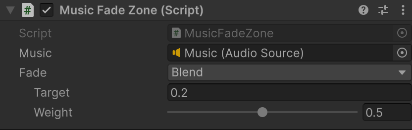

Set, add, multiply, clamp, snap, remap, blend and more, or your own.
[SerializeField] AudioSource music; [SerializeReference] «ModifierFunction<float> fade»; void OnTriggerEnter(Collider other) => music.volume.Modify(«fade»); void OnTriggerExit(Collider other) => music.volume.StopModifying();
